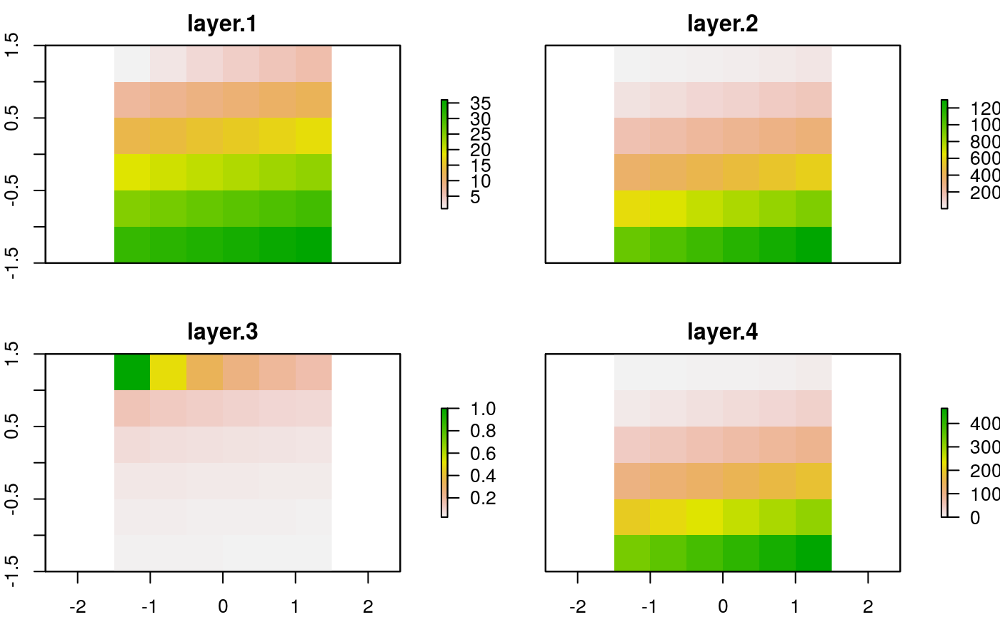

Geocomputation with R: workshop at eRum
Robin Lovelace, Jakub Nowosad and Jannes Muenchow
Source:vignettes/erum-2018.Rmd
erum-2018.RmdThis is a guest post by Robin Lovelace, Jakub Nowosad and Jannes Muenchow. Together we’re writing an open source book called Geocomputation with R. The project aims to introducing people to R’s rapidly evolving geographic data capabilities and provide a foundation for developing scripts, functions and applications for geographic data science.
We recently presented some contents of the in-progress book at the eRum conference, where Jannes ran a workshop on the topic. In this article we share teaching materials from eRum for the benefit of those who couldn’t be there in person and provide a ‘heads-up’ to the R-Spatial community about plans for the book. We’ll start with an overview of ‘geocomputation’ (and define what we mean by the term) and finish by describing how R can be used as a bridge to access dedicated GIS software.
Gecomp ‘base’ ics
The first thing many people will be asking is “what is geocomputation anyway”? As Jannes mentioned in his talk, the choice of name was influenced by the fact that the term seems to have originated in Leeds, where one of the authors (Robin) is based. The first conference on the subject was in Leeds in 1996, with associated extended abstracts including old-school computer graphics still available here; and there was a 21 year home-coming anniversary in 2017 where Robin and Jakub presented. A more practical reason is that the term is unambiguous: it’s about using computing techniques to do new things with geographic data, as indicated in Section 1.1 of the book. Our approach differs in one way from the early conception of geocomputation, however:
Unlike early works in the field all the work presented in this book is reproducible using code and example data supplied alongside the book [using R, an great language for reproducible research].
Like many open source projects R is evolving. Although ‘base R’ is conservative (as demonstrated in Roger Bivand’s keynote, in which he did a live demo using a version of R from 1997 that still runs!), the ‘ecosystem’ of packages that extend its capabilities changes fast (video here, slides at rsbivand/eRum18).
To clarify what we mean by ‘base R’, we can identify base packages with the following code (source: stackoverflow):
x = installed.packages()
row.names(x)[!is.na(x[ ,"Priority"])]## [1] "class" "cluster" "codetools" "foreign" "KernSmooth"
## [6] "lattice" "MASS" "Matrix" "mgcv" "nlme"
## [11] "rpart" "survival" "base" "boot" "class"
## [16] "cluster" "codetools" "compiler" "datasets" "foreign"
## [21] "graphics" "grDevices" "grid" "KernSmooth" "lattice"
## [26] "MASS" "Matrix" "methods" "mgcv" "nlme"
## [31] "nnet" "parallel" "rpart" "spatial" "splines"
## [36] "stats" "stats4" "survival" "tcltk" "tools"
## [41] "utils"The output shows there are 28 packages that are currently part of the base distribution (R Core makes “base R” as Martin Maechler put it during another keynote). These can be relied on to change very little in terms of their API, although bug fixes and performance improvements happen continuously.
The same cannot be said of contributed packages. Packages are created, die (or are abandoned) and change, sometimes dramatically. And this applies as much (or more) to r-spatial as to any other part of R’s ecosystem, as can be seen by looking at any one of R’s task views. At the time of writing the Spatial task view alone listed 177 packages, many of them recently contributed and in-development.
In this context it helps to have an understanding of the history (Bivand, Pebesma, and Gómez-Rubio 2013). Like in politics, knowing the past can help navigate the future. More specifically, knowing which packages are mature or up-and-coming can help decide which one to use!
For this reason, after a slide on set-up (which is described in detail in chapter 2 of the book), the workshop spent a decent amount of time talking about the history of spatial data in R, as illustrated in slide 20. A more detailed account of the history of R-spatial is provided in section 1.5 of the book.
The slides outlining the basics of Geocomputation with R (which is roughly a synonym for r-spatial) can be found here: https://geocompr.github.io/workshops/erum2018/01_basics.html
Vector data
Spatial vector data are best used for objects that represent discrete borders such as bus stops (points), streets (lines) and houses (polygons). For instance, we can represent ‘Budapest’ (the city where eRum 2018 was held) as a spatial point with the help of the sf package (E. Pebesma 2018) as follows:
budapest_df = data.frame(
name = "Budapest",
x = 19.0,
y = 47.5
)
class(budapest_df)## [1] "data.frame"budapest_sf = sf::st_as_sf(budapest_df, coords = c("x", "y"))
class(budapest_sf)## [1] "sf" "data.frame"Why bother creating a new class if both objects contain the same essential data? It’s what you can do with an object that’s important. The reason for using the sf class can be understood as follows: it gives the budapest_sf spatial superpowers. We can, for example, now identify what country the point is using a spatial function such as a spatial join implemented in the function st_join() (spatial subsetting would also do the trick, as covered in section 4.2.1). First, we need to load the ‘world’ dataset and set the ‘CRS’ of the object:
# set-up:
library(spData)
sf::st_crs(budapest_sf) = 4326
# spatial join:
sf::st_join(budapest_sf, world)## Simple feature collection with 1 feature and 11 fields
## geometry type: POINT
## dimension: XY
## bbox: xmin: 19 ymin: 47.5 xmax: 19 ymax: 47.5
## epsg (SRID): 4326
## proj4string: +proj=longlat +datum=WGS84 +no_defs
## name iso_a2 name_long continent region_un subregion
## 1 Budapest HU Hungary Europe Europe Eastern Europe
## type area_km2 pop lifeExp gdpPercap geometry
## 1 Sovereign country 92476.46 9866468 75.76341 24161.43 POINT (19 47.5)The slides describing vector data in R can be found here:
Raster data
On the other hand, a raster data represents continuous surfaces in form of a regular grid. You can think about a raster as a matrix object containing information about its spatial location. It has rows and columns, each cell has a value (it could be NA) and its spatial properties are described by the cell resolution (res), outer borders (bounding box - xmn, xmx, ymn, ymx), and coordinate reference system (crs). In R the raster package supports the spatial raster format (???).
library(raster)
elev = raster(nrow = 6, ncol = 6,
vals = 1:36,
res = 0.5,
xmn = -1.5, xmx = 1.5,
ymn = -1.5, ymx = 1.5,
crs = "+proj=longlat")The data structure makes raster processing much more efficient and faster than vector data processing.
elev2 = elev^2
elev3 = elev / elev2
elev4 = (elev2 - elev3) * log(elev)
Raster objects can be subsetted (by index, coordinates, or other spatial objects), transformed using local, focal, zonal and global operations, and summarized. Importantly, there are many tools allowing for interactions between raster and vector data models, and transformation between them.
The slides associated with the raster data part of the workshop can be found here:
Visualizing spatial data
The spatial powers mentioned previously have numerous advantages. One of the most attractive is that geographic data in an appropriate class can be visualized on a map, the topic of Chapter 9 of the book.
The workshop was an opportunity to expand on the contents of that chapter and ask: what’s the purpose of maps in the first place? To answer that question we used an early data visualization / infographic created by Alexander von Humboldt, illustrated below. The point of this is that it’s not always the accuracy of a map that’s most important (although that is important): the meaning that you wish to convey and the target audience should be central to the design of the map (in Humboldt’s case the unity of nature to an audience of Enlightenment book readers!):

In the context of geographic data in R, it is easier than ever to create attractive maps to tell a story. The previously created point representing Budapest, for example, can be visualized using the tmap package as follows:
library(tmap)
budapest_df = data.frame(name = "Budapest", x = 19, y = 47.5)
class(budapest_df)
#> [1] "data.frame"
budapest_sf = sf::st_as_sf(budapest_df, coords = c("x", "y"))
class(budapest_sf)
#> [1] "sf" "data.frame"
tmap_mode("view")
#> tmap mode set to interactive viewing
m = tm_shape(budapest_sf) + tm_dots() + tm_view(basemaps = "OpenStreetMap",
set.view = 9)
tmap_leaflet(m)
A range of mapping techniques were covered in the workshop including the plot() method from the sf package that generates multiple maps from a single object by default, such as this one representing the nz (short for New Zealand) object from the spData package:

More advanced maps were demonstrated, including this animated map of the United States (for information on how to make animated maps with R, see section 9.3) of Geocomputation with R.

The slides forming the basis of the visualization part of the tutorial can be found here:
Last but not least was a section on GIS bridges
Defining a Geographic Information System as a system for the analysis, manipulation and visualization of geographic data (Longley 2015), we can safely claim that R already has become a GIS. However, R has also its shortcomings when it comes to spatial data analysis. To name but a few, R is not particularly good at handling large geographic data, it is not a geodatabase and it is missing literally hundreds of geoalgorithms readily available in GIS software packages and spatial libraries. Fortunately, R has been designed from the beginning as an interactive interface to other languages and software packages (Chambers 2016). Hence, as long as we can access the functionality of GIS software from within R, we can easily overcome R’s spatial data analysis shortcomings. For instance, when attaching, the sf package to the global environment, it automatically links to GEOS, GDAL and proj.4, this means, the sf package gives the R user automatically access to the functionality of these spatial libraries. Equally, there are a number of packages that provides access to the geoalgorithms of major open source GIS Desktop software packages:
- rgrass7 provides access to GRASS7
- RSAGA provides access to SAGA GIS
- RQGIS provides access to QGIS. For much more details and background information, please check out the corresponding R Journal publication.
Note that you must have installed the GIS software on your machine before you can use it through R.1
In the workshop we shortly presented how to use RQGIS. The corresponding slides can be found here:
In the book we additionally demonstrate how to use RSAGA and rgrass7 in Chapter 10.
Background on the book
Geocomputation with R is a collaborative project. We joined forces because each of us has been been teaching and contributing to R’s spatial ecosystem for years and we all had a similar vision of a book to disseminate R’s impressive geographic capabilities more widely.
As described in a previous article by Jakub, we’re making good progress towards finishing the book by the end of summer 2018, meaning Geocomputation with R will be published before the end of the year. The target audience is broad but we think it will be especially useful to post and under-graduate students, R users wanting to work with spatial data, and GIS users wanting to get to grips with command-line statistical modeling software. A reason for publishing the article here is that we have around 3 months (until the end of August) to gather as much feedback on the book as possible before it’s published. We plan to keep the code and prose up-to-date after that but now is the ideal time to get involved. We welcome comments and suggestions on the issue tracker, especially from people with experience in the R-Spatial world in relation to:
- Bugs: issues with lines of prose or code that could be improved.
- Future-proofing: will the code and advice given stand the test of time? If you think some parts will go out of date quick, please let us know!
- Anything else: ideas for other topics to cover, for example.
We would like to thanks the anonymous peer reviewers who have provided feedback so far. We’re still working on changes to respond to their excellent comments. If you’re interested in getting involved in this project, please see the project’s GitHub repo at github.com/Robinlovelace/geocompr and check-out the in-progress chapters at geocompr.robinlovelace.net.
References
Bivand, Roger, Edzer J Pebesma, and Virgilio Gómez-Rubio. 2013. Applied Spatial Data Analysis with R. Vol. 747248717. Springer.
Chambers, John M. 2016. Extending R. CRC Press.
Longley, Paul. 2015. Geographic Information Science & Systems. Fourth edition. Hoboken, NJ: Wiley.
Pebesma, Edzer. 2018. “Simple Features for R: Standardized Support for Spatial Vector Data.” The R Journal.